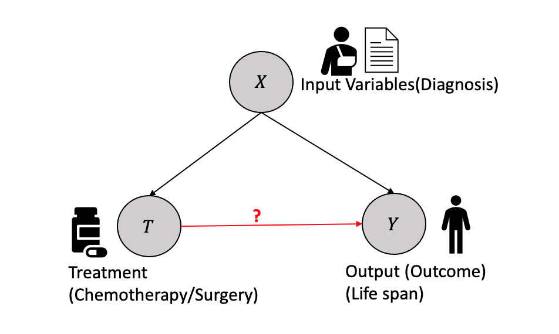
2 Causal Inference: Theory and Basic Concepts
This chapter offers a comprehensive overview of the fundamental concepts and theoretical foundations involved in explaining causal effects through the potential outcome framework. It provides insights into various challenges encountered in causal inference and presents a logical framework to address these challenges effectively. In this chapter, we present a comprehensive case study that utilizes a widely recognized causal study conducted with an educational television program. This case study serves as a practical example, aiming to offer readers a firsthand understanding of the concepts discussed in the chapter. The chapter concludes with solutions to numerous challenges from the Gelman and Hill book, intending to enable readers to develop the acumen required to contemplate, model, and apply the theory discussed in the chapter.
2.1 A Motivating Example
Let’s consider a scenario where researchers are conducting a study to evaluate the effectiveness of an education program designed to improve students’ math skills. The main question they want to answer is whether the education program itself is responsible for the observed changes in math performance. To understand this, let us explore the concepts of association and causality and how they relate to evaluating program effects.
Imagine a group of students participating in the study. Some students are selected to receive the education program, while others do not receive the education program. The researchers want to determine if the education program directly impacts students’ math skills.
2.1.1 Question 1: Is there an Association?
The first step is to determine if there is an association between participating in the education program and improvements in math skills. Researchers compare the math performance of the students who received the program with those who did not. If the students who received the program consistently demonstrated higher average math scores than those who did not, it suggests an association between program participation and improved math skills.
2.1.2 Question 2: Is there Causation?
Establishing causality is the next step in understanding the true impact of the education program. While an association indicates a relationship between program participation and math performance, it does not prove causation. To determine causality, researchers need to consider other factors that may influence math skills and design the study to isolate the program’s effects. These factors, sometimes related to students’ prior knowledge or external support, could potentially influence the relationship between the program and math performance.
2.1.3 An Approach
Researchers can employ a randomized approach to address the issues and better assess the causal impact of the education program. They randomly assign students to different groups (a key assumption), ensuring they have similar characteristics. Doing so reduces the likelihood of other factors affecting the observed relationship between the program and math skills.
Through random assignment, any differences in math performance between the two groups can be more confidently attributed to the education program itself. Randomization helps mitigate the influence of other factors, leveling the playing field and allowing researchers to draw more accurate conclusions about the program’s effects. While randomization does not guarantee the complete elimination of these other factors, it helps in reducing their potential impact.
By comparing the average math performance of the students who received the program with those who did not, researchers can assess the program’s potential impact. Suppose the group of students who received the program consistently demonstrates higher average math scores than those who did not. In that case, it provides evidence that the education program may have a causal effect on improving math performance.
2.2 Potential Outcome Framework
This section will discuss the potential outcome framework, which represents a fundamental building block for causal inference. Although Splawa-Neyman originally introduced the potential outcome concept, it was D. Rubin’s groundbreaking research on estimating causal effects in both randomized and non-randomized studies that established it as the lingua franca of causality-based frameworks (Rubin 1974; Splawa-Neyman, Dabrowska, and Speed 1990).
2.2.1 Basic Terminology
In order to clearly illustrate the concepts discussed, this section provides concise definitions for each term utilized within the potential outcome framework. The framework serves as a means to connect the various elements, including treatment (referred to as policy, intervention, etc.), unit (encompassing individual, sample, etc.), and outcome (effect, function, response, etc.).
Variables: Variables/attributes/features are the things associated with describing the state of the universe in the given dataset. In the above scenario, the available variables in the data include the students’ group assignment (education program or no education program), math performance scores, and other potential variables such as demographics, prior academic achievement, and any additional relevant characteristics that may be collected as part of the study.
Unit: Unit/Sample/Individual is the thing that one subjects to the treatment and on which the effect or the outcome is observed. It is defined as the atomic research object in the treatment effect study. For example, individual student participating in the study is the unit/sample.
Treatment: Treatment/Policy/Intervention is the action or activity the unit is subjected to. We will denote this by \(T\), where \(T \in \{1,2,..N_T\}\) denotes \(N_T+1\) treatments possible. In most of the examples in the literature, \(T\) is considered to be binary \((T=1)\). The treatment in the example represents the education program itself, which is given to a specific group of students.
Treated group and Control group: The group of units or samples exposed to any treatment is considered a treated group. When treatment values are binary, the group exposed to the treatment is the treatment group, and the other group not exposed is called the control group. In the example, The treated group consists of students who receive the education program and the control group consists of students who do not receive the education program.
Potential outcome: When the unit is exposed to a treatment, the outcome is called the potential outcome. When an individual \(i\) is exposed to treatment \(T=t\), then the potential outcome is given by \(Y(T=t)\).Each student has two potential outcomes: \(Y(T=1)\) and \(Y(T=0)\). \(Y(T=1)\) represents the math score a student would achieve if they receive the education program, while \(Y(T=0)\) represents the math score they would achieve if they do not receive the program.
2.2.2 Counterfactuals
Counterfactuals represent the unobserved outcomes that would have occurred for each individual had they been assigned to a different treatment condition. In the context of evaluating the education program for students, counterfactuals help us imagine how a student would perform in math if they had been in a different group (given the program or not given the program).
For example, let us consider a student assigned to the treatment group and receiving the education program. The counterfactual for the student would be his/her math performance if the student had been assigned to the control group and not received the program. It allows us to compare how the student performed with how he/she would have performed under a different condition.
By comparing the observed outcome (student’s actual math performance after receiving the program) with the counterfactual outcome (the math performance student would have had without the program), researchers can estimate the causal effect of the education program on the student’s math skills. This comparison helps determine whether the program positively impacted her math performance or if any observed improvement was merely coincidental.
Counterfactuals are important because they help us understand the specific contribution of the treatment (education program) by contrasting it with what would have happened if it had not been provided. They provide a basis for estimating the causal effect and enable researchers to conclude the effectiveness of the program.
2.2.3 Confounders
A confounding variable, also referred to as a confounding factor, confound, lurking variable, or confounder, is a variable that is positively or negatively associated with both the dependent variable (covariate) and an independent variable (outcome). Typically, the concept of a confounder is discussed in the context of a treatment study, wherein an external variable may influence the relationship between the treatment and the outcome of interest.
Examples of confounders in the students treated with the program scenario could be prior math skills or the socioeconomic background of the students. Confounding factors, such as prior math skills and socioeconomic background, can influence the relationship between the education program and students’ math skills. Prior math skills may falsely make the program appear more effective if the treated group has higher initial math skills. Socioeconomic background can also independently impact math skills. To mitigate bias, it is essential to consider and control these confounders.
2.2.4 Indivdual Treatement Effect
Individual Treatment Effects (ITE) or Individual Causal Effect (ICE) refer to the specific causal effects of a treatment or intervention on each individual within a population. ITE captures the difference in outcomes that can be attributed to the treatment for a particular unit, comparing their actual outcome with the counterfactual outcome that would have occurred if they had received a different treatment or no treatment at all.
Observable or actual outcomes are different from the potential outcomes. For example, when a unit \(i\) is exposed to a treatment \(T\) with binary values (0 and 1), the causal effect can be written formally in terms of both the potential outcomes using a single equation, given by:
\[ITE = Y_i(T=1) - Y_i(T=0)\]
2.2.5 Randomized Control Trials/Tests (RCT)
Randomized control trials (RCTs) are experimental studies used in causal inference to evaluate the effectiveness of an intervention or treatment. They are designed to test the causal relationship between a treatment and an outcome by randomly assigning participants to treatment and control groups.
The process of conducting an RCT involves several steps. First, a sample of participants/units is recruited and randomly assigned to either the treatment or control groups. The treatment group receives the intervention or treatment being tested, while the control group receives either no treatment or a placebo. The outcome of interest is measured in both groups after a predetermined period of time.
Tip
By randomly assigning participants to the treatment and control groups, RCTs ensure that any differences between the two groups are due to chance and not to pre-existing differences in the characteristics of the participants. The process is crucial because it allows for the identification of causal effects, that is, the difference in the outcome between the treatment and control groups that is due to the treatment itself.
RCTs are considered the gold standard in causal inference, as they minimize the influence of confounding variables and allow for estimating causal effects.
In the student program example, randomly assigning a group of students to two groups: one group receives the education program, and the other group does not receive any additional intervention is the RCT process. This random assignment helps create two comparable groups in terms of their characteristics, reducing the likelihood of bias due to confounding factors.
2.3 The Fundamental Problem of Causal Inference
In the given scenario, counterfactuals pose an inherent challenge of observing multiple outcomes for the same individual. In the context of causal inference, the problem lies in the fact that we can only observe one outcome for each student, either with the educational program or without it.
This limitation creates a significant hurdle in establishing a causal relationship because we cannot directly observe what would have happened to a student had they been assigned to the alternative group.
Tip
The counterfactual is unobserved since only one outcome can be observed per unit for a treatment. Thus it is impossible to calculate the causal effect at the unit or individual level, as only one quantity is observed. This is widely regarded as the fundamental problem of causal inference (Rubin 1974).
As the counterfactuals remain unknown, the estimation of the individual treatment effect solely based on the available data, without the aid of additional tools or information, is not possible.
2.4 Overcoming the Fundamental Problem of Causal Inference
In the context of causal inference, consider an example involving a cancer patient as shown in Figure 2.1. The patient’s diagnosis determines the treatment plan, and both variables affect the outcome of survival time. The diagnosis is represented by the variable \(X\), which could be health records, medical images, etc. The Treatment \(T\), which is binary in this example (e.g., surgery or chemotherapy), but could be continuous in other cases, affects the survival time, which is a continuous variable represented by the outcome \(Y\). It is assumed that the treatment is determined once based on the diagnosis and does not change. The treated outcome \(Y_i(1)\) represents the outcome for surgery, while the control outcome \(Y_i(0)\) represents the outcome for non-surgery (chemotherapy).
Causal effect question: What is the causal effect of surgery versus chemotherapy on the survival time of cancer patients?
Let us consider an example to demonstrate the situation with observational data. Let us consider four samples, each going through binary treatment \(T=0/1\) and resulting in outcome \(Y=0/1\).When the unit \(1\) undergoes the treatment \(T=0\), it results in outcome \(Y(T=0)=0\), but we do not know the effect of \(T=1\) and hence \(Y(T=1)=?\). Similarly, there is only one observation for each subsequent unit, and the other is unknown, resulting in missing data for one of the outcomes in every case. Thus, the causal effect can be categorized as a missing data interpretation in statistical learning.
| Unit(i) | Treatment \(T\) | Outcome \(Y\) | \(Y(T=0)\) | \(Y(T=1)\) | \(Y(T=1)-Y(T=0)\) |
|---|---|---|---|---|---|
| 1 | 0 | 0 | 0 | ? | ? |
| 2 | 0 | 1 | 1 | ? | ? |
| 3 | 1 | 0 | ? | 0 | ? |
| 4 | 1 | 1 | ? | 1 | ? |
Thus, measuring the causal effect for each unit is impossible because of the missing data problem.
Question: Is it possible to calculate the effect by taking the average of the Y(T=0) column and subtracting it from the average of the Y(T=1) column, disregarding the missing data (represented by the question marks)?
Population measures such as the Average Treatment Effect (ATE) are used to address this challenge by taking the average of the outcomes column from the observational data.
ATE provides an estimate of the average causal effect of a treatment on the entire population, allowing us to assess the overall impact of the treatment intervention in the absence of counterfactuals and thus solving the fundamental problem of causal inference. In the next section, we will discuss some of the population measures that help us estimate the treatment effects.
2.5 Population Level Treatment Effects
In general, the treatment effect is a measure at the population level, treated group or subgroup level, or individual level that helps us quantify the relationship between the treatment \(T\) and the outcome \(Y\) based on the inputs \(X\). Assume that a study is conducted with units that are randomly assigned to treatment and control, and the units represent a random sample from the target population. The employment of random sampling and random treatment allocation enables the estimation of the treatment’s average causal effect on the population.
Some of the most well-known treatment effects using observations are:
- Average Treatment Effect (ATE) is the treatment effect measured at the population level as a difference between the treated and the control group and is given by:
\[ATE = \mathbb{E}[Y(T=1) -Y(T=0)]\] Using the linearity of expectations \[ATE = \mathbb{E}[Y(T=1)] -\mathbb{E}[Y(T=0)]\] This expression can be written as the equivalent conditional expectations of \(Y\) given Treatment \(T=0/1\) as: \[ATE = \mathbb{E}[Y|T=1] -\mathbb{E}[Y|T=0]\] Thus, from the causal effect calculation, we can remove all the unknowns and measure the average by treating the missing data with a value 0, as given below:
| Unit(i) | Treatment\(T\) | Outcome \(Y\) | \(Y(T=0)\) | \(Y(T=1)\) |
|---|---|---|---|---|
| 1 | 0 | 0 | 0 | 0 |
| 2 | 0 | 1 | 1 | 1 |
| 3 | 1 | 0 | 0 | 0 |
| 4 | 1 | 1 | 1 | 1 |
Thus, \(ATE = \mathbb{E}[Y|T=1] -\mathbb{E}[Y|T=0] = 0\)
ATE calculation done here assumes \(\mathbb{E}[Y(T=1)] -\mathbb{E}[Y(T=0)]=\mathbb{E}[Y|T=1] -\mathbb{E}[Y|T=0]\). This assumption may not be true in all cases, resulting in the associational difference rather than causal difference, especially when some covariates or variables are confounding or the groups are not comparable. The next section will discuss the assumptions that help make the ATE the same as the associational difference.
- Average Treatment effect on the Treated group (ATT): The average treatment effect on the treated group can be defined as the expected difference between the outcomes \(Y(T=1),Y(T=0)\) conditioned on the treated group \(T=1\) and is given as:
\[ATT = \mathbb{E}[Y(T=1)|T=1] -\mathbb{E}[Y(T=0)|T=1]\]
ATT focuses on the treated group and provides insights into the treatment’s impact, specifically on those who underwent the intervention. ATT helps assess the effectiveness of the treatment for individuals who chose to or were selected to receive it.
- Conditional Average Treatment Effect (CATE): At the subgroup level, the average treatment effect conditioned on a specific subgroup, i.e. conditioned on a specific set of input covariates \(X\), result in conditional average treatment effect (CATE) and is given by:
\[CATE = \mathbb{E}[Y(T=1)|X] -\mathbb{E}[Y(T=0)|X]\]
CATE is used when the treatment effect is expected to vary across different subgroups or individual characteristics within the population.
Tip
To summarize, ATE summarizes the treatment effect that applies to the entire target population. ATT is used when the interest lies in estimating the average causal effect of a treatment on those who received the treatment. CATE aims to understand the heterogeneous treatment effects and identify factors that moderate the impact of the treatment.
The choice of measure depends on the research question, the target population, and the level of heterogeneity in treatment effects of interest.
2.5.1 Assumptions in Causal Effect Computation
In this section, we will describe in detail some of the assumptions made to compute the causal effect and the implications of these assumptions.
2.5.1.1 Ignorability
Tip
This assumption states that the potential outcome for the treated \(Y(T=1)\) and the control \(Y(T=0)\) are independent of the treatment, i.e. \((Y(T=1), Y(T=0) \perp T )\).
Because of the ignorability assumption, we get the following equivalence in the calculation of the causal effect \(\mathbb{E}[Y(T=1)]- \mathbb{E}[Y(T=0)] = \mathbb{E}[Y(T=1)|T=1]- \mathbb{E}[Y(T=0)|T=0]\).
Tip
The Ignorability assumption enables us to compute the ATE by ignoring the unknowns because \(\mathbb{E}[Y(T=1)|T=1]- \mathbb{E}[Y(T=0)|T=0] = \mathbb{E}[Y|T=1]- \mathbb{E}[Y|T=0]\)
This assumption is also referred to as the exchangeability assumption. Ignorability and exchangeability are the same concepts, but they give different perspectives why the ATE is equal to the associational difference. Assume the treatment group (\(T=1\)) and the control group (\(T=0\)) both had the associated expectations \(\mathbb{E}[Y|T=1]=y_1\) and \(\mathbb{E}[Y|T=0]=y_0\) respectively. The exchangeability assumption states that the expectations remain unchanged if we swap the sub-groups, i.e., the treatment and the control group, the expectations of the groups remain the same, i.e., \(\mathbb{E}[Y|T=1]=y_1\) and \(\mathbb{E}[Y|T=0]=y_0\) stays as before.
\[ \mathbb{E}[Y(T=1)|T=1] \equiv \mathbb{E}[Y(T=1)|T=0] = \mathbb{E}[Y(T=1)]\] \[ \mathbb{E}[Y(T=0)|T=1] \equiv \mathbb{E}[Y(T=0)|T=0] = \mathbb{E}[Y(T=0)]\]
Tip
Ignorability/exchangeability gives the identifiability to the causal effect. A causal quantity is identifiable if it can be computed from the statistical quantity.
The equation below where the causal quantities, \(\mathbb{E}[Y(T=1)]\) and \(\mathbb{E}[Y(T=0)]\) are computed from the statistical quantities \(\mathbb{E}[Y|T=1]\) \(\mathbb{E}[Y|T=0]\), makes it identifiable.
\[ \mathbb{E}[Y(T=1)]- \mathbb{E}[Y(T=0)] = \mathbb{E}[Y|T=1]- \mathbb{E}[Y|T=0]\]
2.5.1.2 Conditional Exchangeability and Unconfoundedness
In analyzing causal effects, the exchangeability assumption is typically based on the assumption of unconfoundedness, where treatment assignment is independent of potential confounding factors. However, in practice, confounding factors are commonly present in the data, necessitating the estimation of average treatment effects while accounting for confounding.
Conditional exchangeability is defined where the potential outcome is independent of the treatment conditioned on the inputs, i.e. \((Y(T=0), Y(T=1) \perp\!\!\!\!\perp T) | X)\)
\[\mathbb{E}[Y(T=1)- Y(T=0)|X] = \mathbb{E}[Y(T=1)|X] -\mathbb{E}[Y(T=0)|X]\] (Linearity of expectations)
\[\mathbb{E}[Y(T=1)- Y(T=0)|X] = \mathbb{E}[Y(T=1)|T=1, X] -\mathbb{E}[Y(T=0)|T=0,X]\] (conditional exchangeability)
Thus the causal estimates can be defined in terms of two statistical measures.
\[\mathbb{E}[Y(T=1)- Y(T=0)|X] = \mathbb{E}[Y|T=1, X] -\mathbb{E}[Y|T=0,X]\] Conditional Exchangeability is observed in the data when we condition on \(X\). Conditioning on \(X\) breaks the non-causal association between \(T\) and \(Y\), effectively “blocking” the non-causal pathway at \(X\).
Conditional exchangeability is a crucial assumption for conducting causal inference. With this assumption, we are able to identify the causal effect within specific levels of \(X\), similar to how we did with the assumption of (unconditional) exchangeability.
To obtain the marginal effect that was previously obtained under the assumption of (unconditional) exchangeability, we can achieve this by marginalizing out variable X.
\[\mathbb{E}[Y(T=1)- Y(T=0)] = \mathbb{E}_X\mathbb{E}[Y(T=1)- Y(T=0)|X] \]
\[\mathbb{E}[Y(T=1)- Y(T=0)] = \mathbb{E}_X[\mathbb{E}[Y|T=1, X] -\mathbb{E}[Y|T=0,X]] \]
Tip
Mapping the causal quantity \[\mathbb{E}[Y(T=1)- Y(T=0)]\] to the statistical quanitity \(\mathbb{E}_X[\mathbb{E}[Y|T=1, X] -\mathbb{E}[Y|T=0,X]]\), that can be derived directly from the observational data is called the adjustment formula.
The shift from exchangeability to conditional exchangeability in causal inference was motivated by the belief that it is a more realistic assumption. However, in practice, it can be challenging to determine with certainty if conditional exchangeability holds. There may exist unobserved confounding variables that are not included in the variables represented by \(X\), thereby violating the assumption of conditional exchangeability. This is where randomized control trials (RCTs) come into play as they help address this issue by effectively randomizing the assignment of treatments, reducing the likelihood of unobserved confounding.
2.5.1.3 Positivity/Overlap
In a binary case, i.e., treatment with discrete value \(T=0\ or\ 1\), if a subgroup has everyone in the treatment group (\(T=1\)) or the control group(\(T=0\)), computing the average treatment effect will not be possible. Thus, some individuals or samples must be assigned to each group with a positive probability of making the computations possible. This is called the positivity assumption (overlap or common support).
For all values of input covariates (\(X=x\)) present in the group of interest \(P(X=x) >0\), then \[ 0 < P(T=1|X=x) < 1\] and \[ 0 < P(T=0|X=x) < 1\] Positivity is an important assumption, as it removes the zero probability cases in the computation of the treatment effect.
From the adjustment formula:
\[\mathbb{E}[Y(T=1)- Y(T=0)] = \mathbb{E}_X[\mathbb{E}[Y|T=1, X] -\mathbb{E}[Y|T=0,X]] \] Assuming both \(X\) and \(Y\) are discrete, we can rewrite the adjustment formula as \[ \begin{aligned} ATE &= \mathbb{E}[Y(T=1)- Y(T=0)]\\ &= \sum_xP(X=x)(\sum_yyP(Y=y|T=1,X=x) - \sum_yyP(Y=y|T=0,X=x) \end{aligned} \] based on the Bayes Rule, we can rewrite the above as: \[ \begin{aligned} &ATE = \mathbb{E}[Y(T=1)- Y(T=0)] \\ &= \sum_xP(X=x) \biggl(\sum_yy\frac{P(Y=y|T=1,X=x)}{P(T=1|X=x)P(X=x)} - \sum_yy\frac{P(Y=y|T=0,X=x)}{P(T=0|X=x)P(X=x)}\bigg) \end{aligned} \] Without the positivity assumption, the denominator would \(0\) and result in not being able to compute the causal effect.
When we encounter a positivity violation, it implies that within a particular subgroup of the data, all individuals consistently receive either the treatment or the control. In such cases, estimating the causal effect of treatment versus control within that subgroup becomes unfeasible because we only observe either the treatment or the control. The alternative condition is never observed within that specific subgroup, making it impossible to estimate the causal effect in that particular context.
Tip
Put simply, our objective is to ensure that the distribution of covariates in the treatment group overlaps with the distribution of covariates in the control group. Hence positivity assumption is known as the overlap or common support.
2.5.1.4 No Interference
The no interference assumption ensures that treatment applied to one unit has no implications or effect on other units. This assumption is equivalent to \[ Y_i(T_1,\cdots, T_{i-1},T_i,T_{i+1},\cdots, T_n)= Y_iT_i\] In our example of cancer and treatment, the chemotherapy treatment given to one individual patient does not impact the outcome of any other patient but him.
2.5.1.5 Consistency
The consistency assumption states that: When a unit is subjected to a particular treatment (\(T=t\)), the potential outcome does not change, i.e., \(T=t \implies Y=Y(t)\). It also implies no different treatment versions with the same value, which can cause different outcomes.
If a particular person is given a chemotherapy treatment (\(T=1\)), the outcome is that they recover (\(Y=1\)). However, there cannot be another setting where there is a way chemotherapy can be administered (\(T=1\)) to the same patient with all other conditions remaining the same, the outcomes are changed, i.e., they do not recover (\(Y=0\)).
2.5.1.6 Stable Unit-Treatment Value Assumption (SUTVA)
In the existing literature, one often encounters the “stable unit-treatment value assumption” (SUTVA). It is imperative to postulate that the allocation of treatment to a particular individual (unit) within an experiment does not influence the result for another individual. This fundamental concept is commonly known as the “stable unit treatment value assumption” (SUTVA). Consequently, SUTVA combines the consistency and the absence of interference and is further based on deterministic potential outcomes.
Failure to uphold SUTVA would require defining a distinct potential outcome for the \(i\)-th unit, not only for every treatment administered to that unit, but for every possible combination of treatment allocations provided to all other units in the experiment.
2.6 Causality Inference: Logical Flow
A causal estimand represents the specific causal effect or quantity of interest that we want to estimate in a study. A causal estimand is any estimand that includes potential outcomes in its definition. It defines the causal relationship we seek to understand, such as the average treatment effect (ATE), the average treatment effect on the treated (ATT), or the conditional average treatment effect (CATE).
Tip
However, these causal estimands are often defined in terms of potential outcomes, which are not directly observable from the available data.
Therefore, the statistical estimand comes into play. A statistical estimand is a quantity derived from the available observational data and does not have a potential outcome.
Identification, as discussed in the last section, helps us move from a causal estimand \(\mathbb{E}[Y(T=1)- Y(T=0)]\) to a statistical estimand \(\mathbb{E}_X[\mathbb{E}[Y|T=1,X] -\mathbb{E}[Y|T=0,X]]\).
Once we have the statistical estimand, we can employ machine learning algorithms such as regression to compute the estimate from the statistical estimand. A machine learning estimator (e.g., Linear Regression) can be used to estimate \(\mathbb{E}[Y|T=1,X]\) and \(\mathbb{E}[Y|T=0,X]\) from the observational data.
Thus the entire logical flow from a target causal estimand to a corresponding estimate is shown in Figure 2.2.
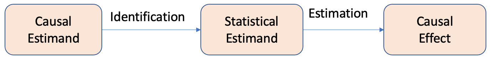
Next, we illustrate how all of the assumptions discussed above and some general statistical assumptions are used to transform from the causal to the statistical estimands.
\[ ATE = \mathbb{E}[Y(T=1)- Y(T=0)]\] (Using the no interference assumption)
\[ ATE = \mathbb{E}[Y(T=1)]- \mathbb{E}[Y(T=0)]\] (Using the linearity of expectations)
\[ = \mathbb{E}_X[\mathbb{E}[Y(T=1)|X] -\mathbb{E}[Y(T=0)|X]]\] (law of iterated expectations)
\[ = \mathbb{E}_X[\mathbb{E}[Y(T=1)|T=1,X] -\mathbb{E}[Y(T=0)|T=0,X]]\] (unconfoundedness and positivity assumption)
\[ = \mathbb{E}_X[\mathbb{E}[Y|T=1,X] -\mathbb{E}[Y|T=0,X]]\] (consistency assumption)
This brings us to two important questions:
How do we perform identification and convert causal estimands into statistical estimands? What are the tools available for this process?
Once we have obtained statistical estimands, how do we proceed with estimation? What tools can be utilized for this purpose?
The next chapter will delve into Causal Graph modeling, which aids in providing a framework for practically performing the identification processes, i.e., conversion of causal estimands to statistical estimands and estimation methods. We will also discuss the algorithms and techniques for estimating the causal effect.
2.7 Case Study
The Electric Company study presents data from an educational experiment conducted in the 1970s on a collection of elementary school classes in two cities, Fresno and Youngstown. The primary objective of this experiment was to assess the impact of The Electric Company, a newly introduced educational television program, on students’ reading ability.
For each grade and city, a small number of schools (10-20) were selected, and within each school, the two poorest reading classes were randomized into treated and control groups. The classes were randomly divided into treated and control groups, with exposure to the program serving as the treatment. Individual student data is not available for analysis, and as a result, the entire analysis was conducted at the classroom level.
To examine the causal impact of the program on the students, we will undertake experiments similar to those conducted by Gelman and Hill.
2.7.1 Tools and libraries
We will use BAyesian Model-Building Interface (Bambi), a Python library that works with the probabilistic programming frameworks PyMC and is designed to make it extremely easy to fit Bayesian mixed-effects. We will use it to model regression with various variables.
Python libraries such as pandas and matplotlib etc. are used for data processing and visualization.
2.7.2 Basic Regression Analysis
A general difference estimate is conducted, a regression analysis using a treatment indicator variable, under the assumption of a fully randomized experiment that generated the observational data and without the presence of any pre-test scores as variables. The obtained result shows a regression coefficient of 5.6 with a standard error of 2.5. This initial estimate serves as the foundation, assuming that making modifications will enhance the estimate’s accuracy.
# Fit the linear regression model
X = electric['treatment'].values.reshape(-1, 1)
y = electric['post_test'].values
reg = LinearRegression().fit(X, y)
# Print the coefficients and intercept of the linear regression model
print('Coefficients: ', reg.coef_)
print('Intercept: ', reg.intercept_)Coefficients: [5.65729167]
Intercept: 94.320833333333352.7.3 Regression Analysis Per Grade
The histogram plot of the post-test scores distributed across different grades, as presented in Figure 2.3, illustrates a considerable degree of variation among the test scores across various grades.
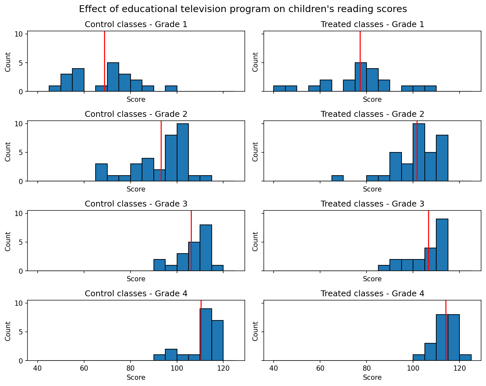
Considering the substantial heterogeneity observed in the test scores across different grades, it is logical to proceed with the next analytical step, which involves conducting individual regression analyses for each grade’s dataset. This approach corresponds to fitting a model that accounts for the variability of treatment effects by grade, specifically the interaction between the treatment and grade indicators. It allows for the possibility of varying residual variance across different grades.
Figure 2.4 displays general effectiveness, particularly in the lower grades, albeit the large standard errors of estimation make it challenging to ascertain with certainty.
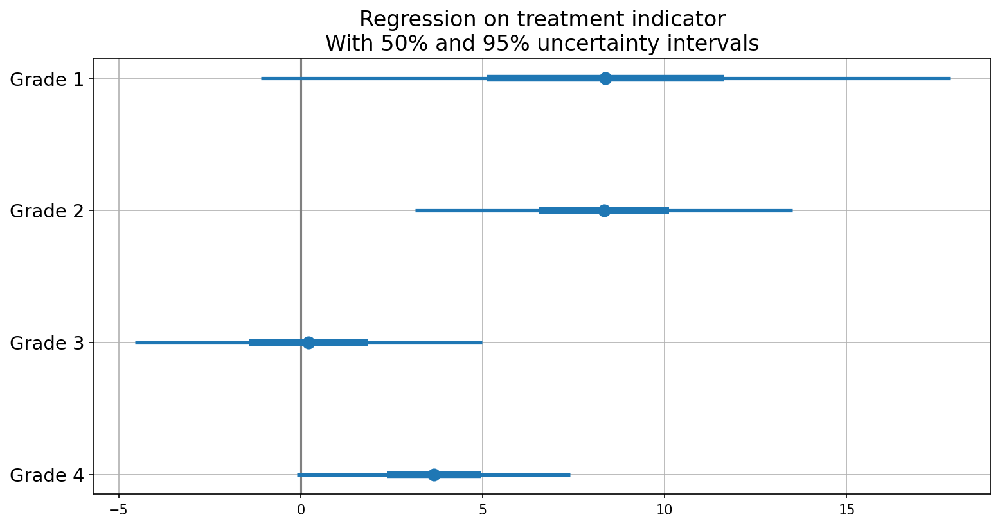
2.7.4 Regression Analysis with Treatment and Pre-Test Scores
In an attempt to refine the treatment effect estimates, we incorporate the pre-test scores as an additional input variable alongside the treatment variable. Specifically, we fit separate models for each grade, with the treatment and pre-test variables included as input parameters. As the model does not account for any interaction, the treatment effect is presumed to remain constant across all pre-test score levels.
In Figure 2.5, the difference between the regression lines for the two groups depicts the estimated treatment effect as a function of the pre-treatment score, separately for each grade. It is observed that the regression lines for the treated groups lie slightly higher than those for the control groups.
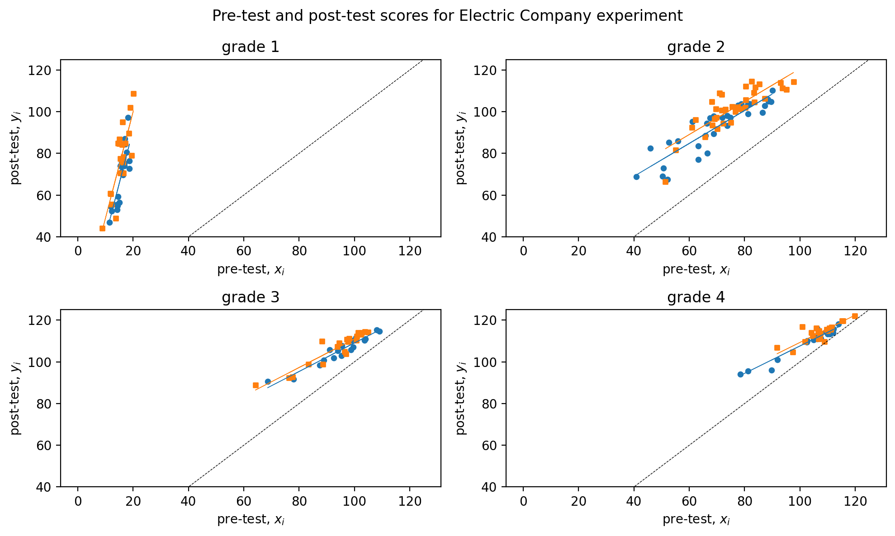
In Figure 2.6, the regression analysis of post-test scores with treatment and pre-test scores is presented, with \(50\)% and \(95\)% uncertainty intervals illustrated through error plots and compared to one with just treatment. The inclusion of pre-test scores in the analysis provides greater clarity regarding the effectiveness of the treatment as compared to just the treatment. The results indicate that the treatment displays average effectiveness for each grade, with relatively more significant effects observed in the lower grades.
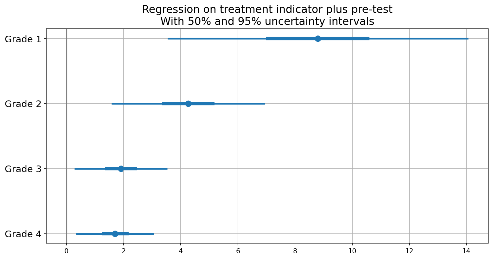
2.7.5 Interactions of Treatment Effect with Pre-Treatment Inputs
After incorporating the pre-test score as an input in the model, the subsequent analytical step enables its interaction with the treatment effect. This allows the treatment to influence both the intercept and the slope of the pre-test/post-test regression. Figure 2.7 shows regression with interaction element added.
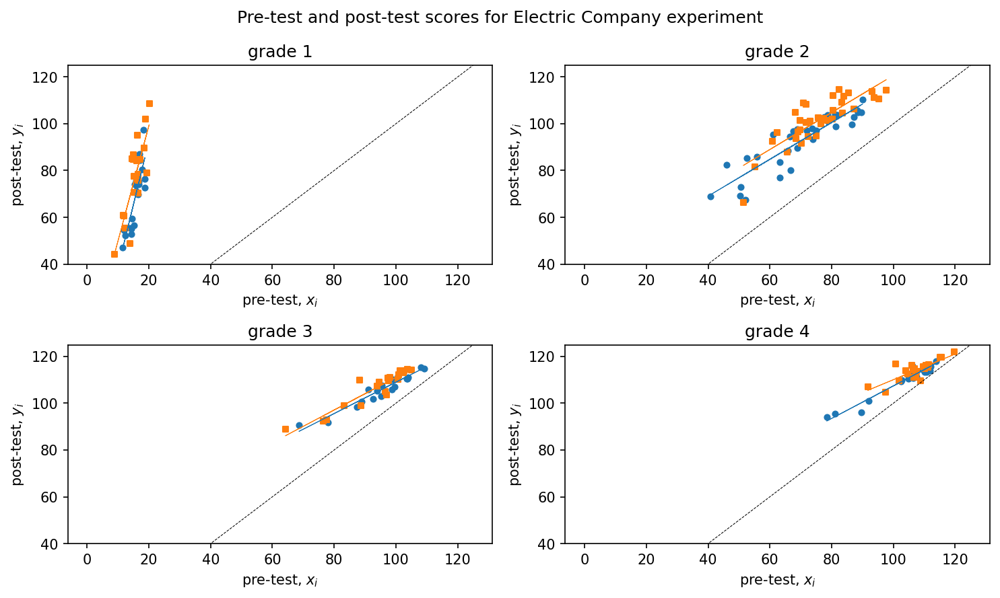
For grade 4, the estimated treatment effect is \(3.7\) with a standard error of \(1.8\),, when we add pre-test scores, the estimated treatment effect is \(1.7\) with a standard error of \(0.7\).
coefficient standard error
(Intercept) 110 1.3
treatment 3.7 1.8 coefficient standard error
(Intercept) 42 4.3
treatment 1.7 0.7
pre-test 0.7 0Incorporating the interaction of treatment with pre-test introduces additional complexity. The estimated treatment effect, expressed as \(17 - 0.15x\), cannot be readily interpreted without knowledge of the corresponding range of \(x\). It is worth noting that pre-test scores have been observed to range between approximately \(80\) and \(120\) from the grade \(4\) plot as in Figure 2.7. Within this range, the estimated treatment effect varies between \(17-0.15·80=5\) for classes with pre-test scores of \(80\), and \(17-0.15·120=-1\) for classes with pre-test scores of \(120\). The observed range illustrates the variation in estimated treatment effects with respect to pre-test scores, and does not represent the uncertainty associated with the estimation of treatment effects. To quantify the uncertainty, a graphical representation of the estimated treatment effects as a function of \(x\) can be generated, superimposing random simulation draws on the plot as shown in Figure 2.8.
The estimated treatment effect as a function of pre-test score is denoted by the dark line in Figure 2.8. This line represents the difference between the two regression lines in the grade 4 plot, as depicted in Figure 2.7. We can compute the treatment effect and is \(1.8\) with a standard error of \(0.7\) – similar to the result from the model adjusting for pre-test but with no interactions.
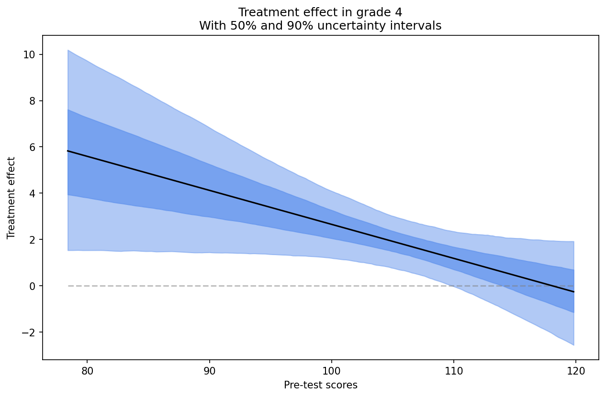
2.7.6 Effect of supplement,for each grade with pre-test.
The educational experiment detailed above includes an embedded observational study where, after treatments were assigned, the teacher for each Electric Company treatment group class decided to either replace or supplement the regular reading program with the Electric Company television show. This decision resulted in some classes watching the show instead of the regular reading program while others watched it in addition to it. The analysis of these observational data is simplified by treating the choice between the two treatment options, “replace” or “supplement”, as randomly assigned based on pre-test scores, within the randomized treatment group.
A new variable, referred to as “supp”, is generated in this study to differentiate between the replacement and supplement forms of treatment. The value of 0 is assigned to the replacement group, while the supplement group is assigned a value of 1. The control group is assigned a value of NA.
Subsequently, the effect of supplement relative to replacement for every grade is evaluated through a regression of post-test on the indicator and pre-test.
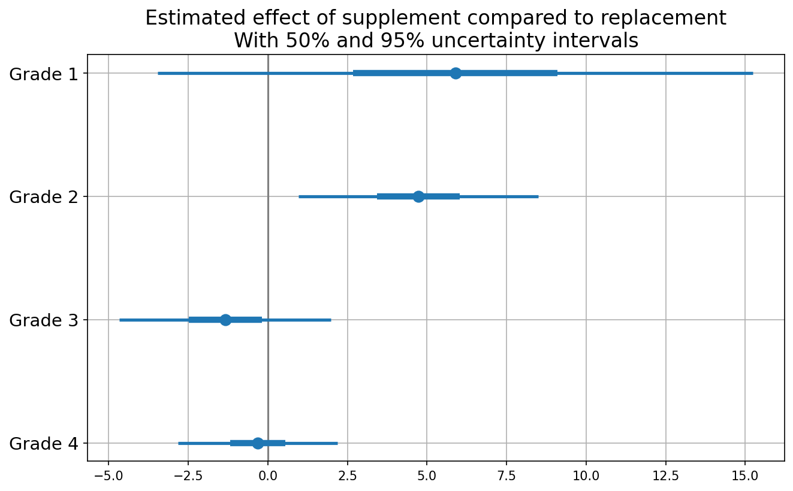
The level of uncertainty is substantial, rendering the comparison inconclusive, barring grade \(2\) where the conclusion is less ambiguous as shown in Fig.@fig-withsupplement. Nevertheless, overall the results align with the reasonable supposition that supplementing is more efficacious than replacing in the lower grades.
2.8 Hands-on Excercises
This section aims to provide readers with a comprehensive understanding of the causal inference approach by solving various exercises from Gelman and Hill’s Causal Inference chapter. The aim is to equip readers with the necessary skills to approach problems using causal reasoning and provide an opportunity to practice basic inference and estimation techniques.
2.8.1 Queston: Randomized Experiments in a Perfect World
(Adapted from Hill and Gelman, Chapter 9, Question 1)
Suppose you are interested in the effect of the presence of vending machines in schools on childhood obesity. What randomized experiment would you want to do (in a perfect world) to evaluate this question?
A conceivable experimental design entails employing vending machines as the treatment and assessing the obesity prevalence as the outcome. A random assignment of schools to the treatment and control groups would be conducted, such that the vending machines would be installed in the treatment group while the control group would have no vending machines. Prior to the installation of the vending machines, the weight of children in all schools would be measured, and the same procedure would be repeated at the end of the school year.
2.8.2 Queston: Simulating Randomized Experiments in the Real-World
(Adapted from Hill and Gelman, Chapter 9, Question 2)
Suppose you are interested in the effect of smoking on lung cancer. What randomized experiment could you plausibly perform (in the real world) to evaluate this effect?
In real-world, one could identify an existing population that is already divided into smokers and non-smokers, and use statistical methods to adjust for potential confounding factors to estimate the causal effect of smoking on lung cancer. However, such observational studies have inherent limitations and the estimated effect may be subject to bias due to unobserved confounding factors.
2.8.3 Question: Real-world Causal Design Quesitons
(Adapted from Hill and Gelman, Chapter 9, Question 3)
Suppose you are a consultant for a researcher who is interested in investigating the effects of teacher quality on student test scores. Use the strategy of mapping this question to a randomized experiment to help define the question more clearly. Write a memo to the researcher asking for needed clarifications to this study proposal.
The clarifications for the study would include questions pertaining to:
Treatment and Control Groups: Could you please clarify how you plan to assign students to the treatment and control groups? Will this be done randomly or through some other method?
Sample Size and Selection: Could you provide details about the population from which the sample will be selected? Will the sample size be large enough to ensure statistical validity?
Teacher Quality: How do you plan to measure teacher quality? Will this be based on standardized test scores, years of teaching experience, or some other metric?
Test Scores: What kind of test scores do you plan to use as an outcome measure? Will you use standardized tests or some other kind of test?
Other Variables: Are there any other variables that you plan to control for in the analysis? If so, could you provide more details on these variables and how they will be measured?
2.8.4 Question:Understanding Effects of Treatment Using Causal Analysis
(Adapted from Hill and Gelman, Chapter 9, Question 4)
The table below describes a hypothetical experiment on \(2400\) persons. Each row of the table specifies a category of person, as defined by his or her pre-treatment predictor \(x\), treatment indicator \(T\), and potential outcomes \(y^0\),\(y^1\). (For simplicity, we assume unrealistically that all the people in this experiment fit into these eight categories.)
In this study, we define two treatment groups: \(T=0\) refers to subjects who do not receive aspirin, while \(T=1\) refers to those who do receive aspirin. Moreover, we consider the covariate \(x\), which takes on the value \(0\) if the subject is male and \(1\) if the subject is female.
| Category | #persons in category | \(x\) | \(T\) | \(y^0\) | \(y^1\) |
|---|---|---|---|---|---|
| 1 | 300 | 0 | 0 | 4 | 6 |
| 2 | 300 | 1 | 0 | 4 | 6 |
| 3 | 500 | 0 | 1 | 4 | 6 |
| 4 | 500 | 1 | 1 | 4 | 6 |
| 5 | 200 | 0 | 0 | 10 | 12 |
| 6 | 200 | 1 | 0 | 10 | 12 |
| 7 | 200 | 0 | 1 | 10 | 12 |
| 8 | 200 | 1 | 1 | 10 | 12 |
In making the table we are assuming omniscience, so that we know both \(y^0\) and \(y^1\) for all observations. But the (nonomniscient) investigator would only observe \(x\), \(T\), and \(y^T\) for each unit. (For example, a person in category 1 would have \(x=0\),\(T=0\),\(y=4\), and a person in category 3 would have \(x=0\),\(T =1\),\(y=6\).)
(a) What is the average treatment effect in this population of 2400 persons?
\(\hat{y}(0)\) = \(\frac{300 \times 4 + 300 \times 4 + 500 \times 4 + 200 \times 10 + 200 \times 10 + 200 \times 10+ 200 \times 10}{300 + 300 + 500 + 500 + 200 + 200 + 200 + 200} =6\)
\(\hat{y}(1)\) = \(\frac{300 \times 6 + 300 \times 6 + 500 \times 6 + 200 \times 12 + 200 \times 12 + 200 \times 12+ 200 \times 12}{300 + 300 + 500 + 500 + 200 + 200 + 200 + 200} =8\)
Thus, the average treatment effect \(\hat{y}(0)-\hat{y}(1)\) = \(6-8\) = \(-2\)
(b)Is it plausible to believe that these data came from a randomized experiment? Defend your answer.
In the event that the data was obtained through a randomized experiment, the expectation is that the observed covariates would be equally distributed between the experimental groups. In the present study, \(500\) out of \(1000\) (\(50%\)) subjects in the \(T=0\) group have \(x=0\), while \(700\) out of \(1400\) (\(50%\)) subjects in the \(T=1\) group have \(x=0\). Hence, the data appears to have plausibly originated from a randomized experiment.
(c) Another population quantity is the mean of \(Y\) for those who received the treatment minus the mean of \(Y\) for those who did not. What is the relation between this quantity and the average treatment effect?
The average for those that received \(T=0\) can be given by: \(=\frac{300 \times 4 + 300 \times 4 + 200 \times 10+ 200 \times 10}{300 + 300 + 200 + 200} =6.4\)
The average for those that received \(T=1\) can be given by: \(=\frac{500 \times 6 + 350 \times 6 + 200 \times 12 + 200 \times 12}{500 + 500 + 200 + 200} =7.7\)
The treatment effect using these averages is \(7.7-6.4=1.3\)
The relationship between this population quantity and the average treatment effect can be explained by the fact that this population quantity relies solely on the observed responses, whereas the average treatment effect takes into account both the observed and unobserved responses. As a result, the treatment effect obtained from this quantity may differ from that obtained from the average treatment effect.
(d)For these data, is it plausible to believe that treatment assignment is strongly ignorable given the covariate x? Defend your answer.
In case of ignorability, then \(P(T|Y(T=0)=y0,Y(T=1)=y1,X=x)=P(T=0|X=x)\)
Let us consider couple of cases to check.
First, let us consider \(Y(T=0)=10, Y(T=1)=12, X=0\), then \(P(T|Y(T=0)=10,Y(T=1)=12,X=0) = \frac{200}{200+200} = 0.5\) \(P(T=0|X=0)=\frac{300+200}{300+500+200+200}=\frac{5}{12}\)
Thus, we can see that \(P(T|Y(T=0)=y0,Y(T=1)=y1,X=x) \neq P(T=0|X=x)\).
Next, let us consider \(Y(T=0)=4, Y(T=1)=4, X=0\), then \(P(T|Y(T=0)=10,Y(T=1)=12,X=0) = \frac{300}{300+500} = \frac{3}{8}\) \(P(T=0|X=0)=\frac{300+200}{300+500+200+200}=\frac{5}{12}\)
Thus, we can see that \(P(T|Y(T=0)=y0,Y(T=1)=y1,X=x) \neq P(T=0|X=x)\).
This suggests that the treatment assignment is non-ignorable, as given the covariate, it is not conditionally independent from the potential outcomes.
2.8.5 Question Causal Modeling and Assumptons
(Adapted from Hill and Gelman, Chapter 9, Question 6)
You are consulting for a researcher who has performed a randomized trial where the Treatment was a series of 26 weekly therapy sessions, the control was no therapy, and the outcome was self-report of emotional state one year later. However, most people in the treatment group did not attend every therapy session. In fact there was a good deal of variation in the number of therapy sessions actually attended. The researcher is concerned that her results represent “watered down” estimates because of this variation and suggests adding in another predictor to the model: number of therapy sessions attended. What would you advise her?
If there was a good deal of variation in the number of therapy sessions actually attended, including the number of therapy sessions as a predictor in the model could help account for this variation and help improve the precision of the estimated treatment effect.
However, there are a few potential issues to consider. First, including the number of therapy sessions attended as a predictor assumes a linear relationship between the number of sessions and the outcome, which may not be true. The relationship could be nonlinear or there could be threshold effects, where the number of sessions attended only has an effect above a certain threshold.
Second, including the number of therapy sessions as a predictor assumes that attending more therapy sessions is a good thing, which may not always be the case. If attending more sessions means that the treatment is more intense or difficult, it could actually have a negative effect on the outcome.
Finally, if the goal is to estimate the average treatment effect of receiving the therapy sessions, including the number of sessions attended as a predictor could result in biased estimates if attendance is correlated with unobserved variables that are also related to the outcome.
Therefore, before advising the researcher, it would be important to carefully consider these potential issues and assess whether including the number of therapy sessions attended as a predictor is appropriate in this particular context.
2.8.6 Question: Understanding the Causal Effect with Different Treatment Effects
Assume that linear regression is appropriate for the regression of an outcome, \(y\), on treatment indicator, \(T\), and a single confounding covariate, \(x\). Sketch hypothetical data (plotting \(y\) versus \(x\)) and regression lines (for treatment and control group) that represent each of the following situations: (a) No treatment effect, (b) Constant treatment effect, (c) Treatment effect increasing with x.
(a) No treatment effect In this case, the regression lines for both the control and treatment groups will be parallel or overlapping with similar slope.
import numpy as np
import matplotlib.pyplot as plt
from sklearn.linear_model import LinearRegression
np.random.seed(0)
x = np.random.normal(0, 1, 100)
y = 2 + 3*x + np.random.normal(0, 1, 100)
t = np.random.binomial(1, 0.5, 100)
plt.scatter(x[t==0], y[t==0], label='Control')
plt.scatter(x[t==1], y[t==1], label='Treatment')
plt.legend()
plt.xlabel('x')
plt.ylabel('y')
# Fit regression lines
lr_t0 = LinearRegression()\
.fit(x[t==0].reshape(-1, 1),
y[t==0].reshape(-1, 1))
lr_t1 = LinearRegression()\
.fit(x[t==1].reshape(-1, 1),
y[t==1].reshape(-1, 1))
# Plot regression lines
plt.plot(x, lr_t0.predict(x.reshape(-1, 1)))
plt.plot(x, lr_t1.predict(x.reshape(-1, 1)))
plt.show()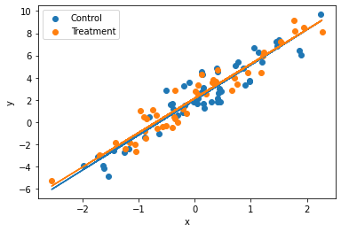
(b)Constant treatment effect
In this case, the regression lines for both the control and treatment groups will be parallel to each other with different y-intercepts.
import numpy as np
import matplotlib.pyplot as plt
np.random.seed(0)
x = np.random.normal(0, 1, 100)
y = 2 + 3*x + 5*t + np.random.normal(0, 1, 100)
t = np.random.binomial(1, 0.5, 100)
plt.scatter(x[t==0], y[t==0], label='Control')
plt.scatter(x[t==1], y[t==1], label='Treatment')
plt.legend()
plt.xlabel('x')
plt.ylabel('y')
# Fit regression lines
lr_t0 = LinearRegression()\
.fit(x[t==0].reshape(-1, 1),
y[t==0].reshape(-1, 1))
lr_t1 = LinearRegression()\
.fit(x[t==1].reshape(-1, 1),
y[t==1].reshape(-1, 1))
# Plot regression lines
plt.plot(x, lr_t0.predict(x.reshape(-1, 1)))
plt.plot(x, lr_t1.predict(x.reshape(-1, 1)))
plt.show()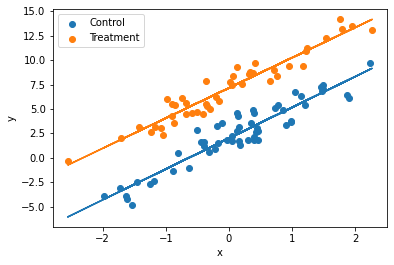
(c) Treatment effect increasing with x:
In this case, the regression lines for the control and treatment groups will have different slopes and different y-intercepts.
import numpy as np
import matplotlib.pyplot as plt
np.random.seed(0)
x = np.random.normal(0, 1, 100)
y = 2 + 3*x + 5*x*t + np.random.normal(0, 1, 100)
t = np.random.binomial(1, 0.5, 100)
plt.scatter(x[t==0], y[t==0], label='Control')
plt.scatter(x[t==1], y[t==1], label='Treatment')
plt.legend()
plt.xlabel('x')
plt.ylabel('y')
# Fit regression lines
lr_t0 = LinearRegression()\
.fit(x[t==0].reshape(-1, 1),
y[t==0].reshape(-1, 1))
lr_t1 = LinearRegression()\
.fit(x[t==1].reshape(-1, 1),
y[t==1].reshape(-1, 1))
# Plot regression lines
plt.plot(x, lr_t0.predict(x.reshape(-1, 1)))
plt.plot(x, lr_t1.predict(x.reshape(-1, 1)))
plt.show()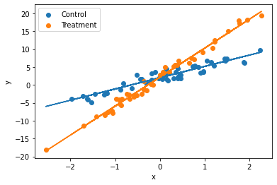
Rubin, D. B. 1974. “Estimating Causal Effects of Treatments in Randomized and Nonrandomized Studies.” Journal of Educational Psychology 66: 688–701.
Splawa-Neyman, Jerzy, Dorota M Dabrowska, and TP Speed. 1990. “On the Application of Probability Theory to Agricultural Experiments. Essay on Principles. Section 9.” Statistical Science, 465–72.